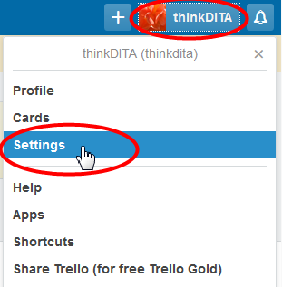

Starting a Trello board
Parent topic
:
Starting a Trello board
Creating a user account
To create a user account in Trello:
If you have an email invitation, click the hyperlink (
View Organization
) in the email message, then when the organization page opens in your browser, click
Join Organization
.
Go to
https://trello.com/
and click
Sign Up
.
Fill in the
Name
,
Email
and
Password
, and click
Create New Account
.
You'll see the
Welcome Board
and a message asking you to confirm your email address.
Open your email account and click the confirmation link
Verify Address
in the email message.
Log in to Trello again if necessary, and click the
Welcome Board
.
Boards are organized in lists and each list contains cards. Read the cards in the
Basics
,
Intermediate
and
Advanced
lists, which form a quick guide.
To set up your account details and notifications, click your user name in the top menu bar and click
Settings
.
